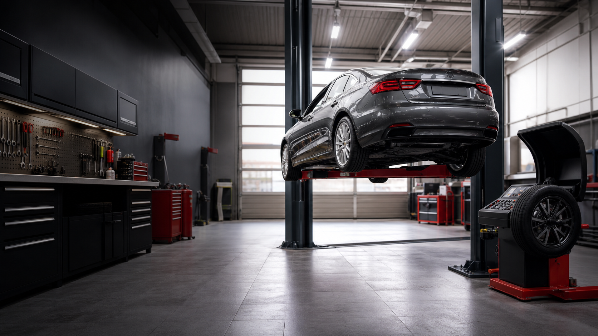

Автосервис
Шиномонтаж, ходовая, ТО
Ефремов · ул. Карла Маркса, 55
Шиномонтаж, балансировка, развал-схождение, замена масла, ремонт ходовой, вулканизация и прокатка дисков для легковых автомобилей.

Популярно
После ремонта подвески, замены резины или сильного удара в яму.
Доверие водителей
320 оценок и 133 отзыва от водителей.
Что можно сделать сразу
Второй блок сразу отвечает на главный вопрос водителя: с какой задачей можно приехать, когда это нужно и почему удобно обратиться сюда.
Сезонная замена и срочный ремонт
Снимаем и ставим колеса, балансируем, проверяем посадку шины, давление и видимые повреждения.
Подходит перед сезоном, после удара в яму, при вибрации на скорости, спускании колеса или неравномерном износе.
Клиенты ценят быстрый прием, аккуратную работу с колесами и понятные рекомендации без лишних услуг.
Чтобы машину не уводило
Настраиваем углы установки колес, чтобы автомобиль ехал ровнее, а резина изнашивалась равномернее.
Нужно после ремонта подвески, замены резины, сильного удара, увода машины в сторону или кривого положения руля.
Можно сразу совместить настройку углов с осмотром ходовой и состоянием шин, чтобы не ездить по разным местам.
Плановое обслуживание без лишнего
Меняем масло и расходники, делаем базовую проверку автомобиля перед дальнейшей эксплуатацией.
Актуально по пробегу, перед дальней поездкой, после покупки автомобиля, перед продажей или сменой сезона.
Работаем с отечественными, импортными и легковыми автомобилями, принимаем наличные и карты.
Стуки, люфты, вибрации
Проверяем элементы подвески и помогаем найти причину стука, люфта, раскачки или посторонних шумов.
Обращайтесь, если автомобиль стучит на неровностях, хуже держит дорогу, тянет в сторону или появились вибрации.
Мастера объясняют причину проблемы и помогают подобрать понятный объем работ без лишней суеты.
Когда колесо спускает
Ремонтируем проколы и небольшие повреждения шин после проверки состояния колеса.
Нужна, если колесо медленно спускает, поймали саморез, появился порез или давление уходит после поездки.
Можно совместить с балансировкой и осмотром колеса, не записываясь в разные места.
После ям и ударов
Выправляем деформации дисков, которые мешают нормальной посадке шины и балансировке.
Помогает после попадания в яму, при биении колеса, потере давления или видимой деформации обода.
Правку дисков можно сделать рядом с шиномонтажом и балансировкой, сразу проверив результат на колесе.
Фото сервиса
Фотографии помогают заранее понять, куда вы приезжаете: вход в боксы, рабочая зона, оборудование и территория сервиса.
Здесь собраны реальные фотографии сервиса на ул. Карла Маркса, 55.
Почему выбирают
Водители выбирают сервис за понятное общение, аккуратный ремонт, адекватное время ожидания, шиномонтаж и сход-развал в одном месте.
Построить маршрутМожно выбрать удобный способ оплаты без лишних уточнений на месте.
Удобно приехать на обслуживание и дождаться результата в сервисе.
Работа с отечественными и импортными легковыми автомобилями.
Например, шиномонтаж, балансировку, прокатку диска и проверку ходовой.
Как проходит запись
Укажите услугу, автомобиль и удобное время связи.
По телефону согласуют объем работ, время приезда и ориентиры.
Адрес легко найти на карте, рядом остановка “Школа № 1”.
Социальное доказательство
Клиенты чаще всего отмечают скорость, внимательное отношение, понятные объяснения и готовность помочь, когда проблема застала в пути.
Быстро переставили колесо и помогли с поврежденным диском. Клиент остался доволен отношением и ценой.
После сильного удара диск выправили быстро, недорого и спокойно объяснили, что было сделано.
Отметил аккуратный шиномонтаж, честный подход по деньгам и хорошую балансировку колес.
По пути на трассе загудел подшипник. Работу выполнили быстро, качественно и без завышения цены.
Мастера выручили в дороге: быстро и недорого починили колесо легкового автомобиля.
Автомобиль сломался на трассе. В сервисе быстро разобрались с проблемой и помогли продолжить путь.
Колесо подлатали за 10-15 минут, аккуратно и без лишних расходов для клиента.
Отметила опытных мастеров, внимательное отношение и быстрое устранение проблемы.
Понравилось, что в одном месте есть сервис, развал и балансировка, а работы выполняют быстро.
Помогли с колесом на прицепе, подобрали решение и взяли деньги только за нужную деталь.
Быстро залатали боковой прокол и помогли без долгого ожидания.
Починили колесо в воскресенье и помогли не застрять в дороге до следующего дня.
Очень быстро помогли с колесом в дальней поездке, чтобы можно было продолжить маршрут.
Пробитое колесо сделали быстро и качественно. Клиент отдельно отметил благодарность мастерам.
Переобули автомобиль примерно за 35 минут, аккуратно уложили колеса и помогли с оплатой картой.
Быстро и аккуратно отремонтировали колесо R-20, когда другие места не смогли принять машину.
Нужен ремонт сегодня?
Если вопрос срочный, лучше сразу позвонить: +7 (920) 750-11-01.
Контакты
Форма заявки
Оставьте телефон и коротко опишите задачу. Обязательные поля: имя, телефон, согласие на обработку данных.